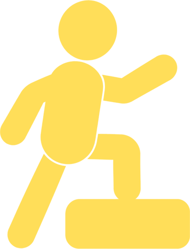

A life audit for your next quarter.
See where things are, who’s in it with you, and the one goal you want to give your time to.
About 8 minutes. Your wheel is free.
Start your life auditSee your wheel before we ask for your email.

The last 4 weeks
I got something done on the work I wanted to do.
That’s the pace. The full audit brings in the rest of your life, and your people.
Your answers,
in the picture.
Your wheel comes first. First name and email open the full result, including your circle read and one goal.
Your work, in your words.
You said “Mostly me” to “I got something done on the work I wanted to do.” You also said “That’s me” to “Work kept eating into my personal time.”
The quiet planner
You have been keeping a goal quiet until you can do it for sure. Someone being able to name a goal you are working on was less like you.
Protect a weekly block for the work that builds your next year
Choose the day and time, and tell your circle so they can ask about it.5 parts.
One thing at the end.
About 52 answers, mostly one tap. Start with what has you taking stock right now.
- 132 statements
Where things are
Situations across 8 areas of your life.
- 28 checks
How it’s going
A one-word check after each area.
- 31 choice
What matters this quarter
Pick up to 3 areas to give attention to.
- 46 statements
Who’s in it with you
The people around your goals.
- 54 steps
Your one thing
A goal, a first step, a day and who sees it.
 Money
Money Health
Health Relationships
Relationships Home
Home Meaning
MeaningThe people
around your plans.
Your goal might be on a board, in a notebook, or in your head. Someone else knowing is a different question.
“Someone I know could name a goal I am working on.”
“I was the one chasing people for their goal updates.”
“I kept a goal quiet until I could do it for sure.”
6 statements about your people become your circle read. You choose who gets to see it.

The method.
The email bit.
Written by Bestday. A tool for taking stock, not a validated test.
A picture from your answers
Think about the last 4 weeks. Each area combines 4 situational answers and your one-word check. Answers about things costing you time or energy count in the other direction.
Each areaYour wheel
8 areas
At least 3 answers are needed to draw an area. Skip one and it stays missing. There’s no overall life score.
Among the areas that matter to you this quarter, we suggest the one with the lowest reading. You can choose another.
Before email
Your wheel, a suggested focus and one area read. Free.
With first name and email
The rest of your result: all area reads, your circle read, your goal, first step and share card.
Your people, your choice
The demo saves and sends nothing. In the full audit, sharing is your choice. Your wheel stays off your share card unless you include it.
Life audit questions.
The practical things before you start.
What is a life audit?
A chance to look across your life and choose what gets your attention next. Bestday’s covers 8 areas, the people around your goals and one goal to take forward.
How long does it take?
About 8 minutes. There are about 52 answers in 5 parts, including a short opening context question. Most answers take one tap.
Is the Life Audit free?
Yes. Your wheel, suggested focus and one area read appear before email. First name and email open the rest of your result.
Is this a wheel of life?
You get a wheel across 8 life areas. It comes from specific situations and an area check, rather than a single satisfaction rating.
Can I skip an area?
Yes. A skipped area stays missing on your wheel. It never becomes a zero or a guessed answer.
Do I have to share my result?
No. You choose who sees your goal. Sharing your wheel is optional, and your result isn’t posted for you.